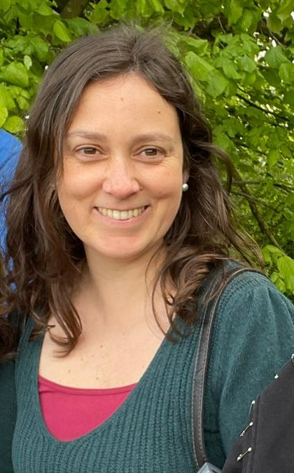

 ¡Hola! I am Francisca, a Chilean researcher based in Germany and a very proud volunteer firefighter.
I currently work on Public Administration at Stadt Friedrichshafen in the area of Municipal taxes.
During the last few years, I have been studying Literature and Film from a cultural and postcolonial perspective.
I am also interested in religious syncretism and its sacred, profane, and terrifying representations.
I enjoy teaching, especially Creative Literature, Cultural Studies, and Eco-Cultural Studies.
Here is my sort CV and there full CV with list of all publications.
¡Hola! I am Francisca, a Chilean researcher based in Germany and a very proud volunteer firefighter.
I currently work on Public Administration at Stadt Friedrichshafen in the area of Municipal taxes.
During the last few years, I have been studying Literature and Film from a cultural and postcolonial perspective.
I am also interested in religious syncretism and its sacred, profane, and terrifying representations.
I enjoy teaching, especially Creative Literature, Cultural Studies, and Eco-Cultural Studies.
Here is my sort CV and there full CV with list of all publications.
Education
- 2012-2017, Universidad de Santiago de Chile. Ph.D. in Latin American Cultural Studies, specialized on Thought
and Culture. Grade: Summa cum laude.
[link]
- 2003-2009, Universidad Diego Portales, Santiago de Chile. Bachelor in Literature. [link]
Scholarships and Distinctions
- 2018, Bridge Scholarship for Postdoctoral Project, Board for Equal Opportunities, Universität Konstanz, Germany.
- 2015-2017, National Ph.D. Scholarship, special funding for a Research Internship at Universität Konstanz, Germany.
National Commission for Scientific and Technological Research, Ministry of Education, Chile.
- 2012 - 2017, National Ph.D. Scholarship. National Commission for Scientific and Technological Research, Ministry of Education, Chile.
- 2010, Academic Excellence Award, Universidad Diego Portales, Chile.
- 2010, Excellence in Research Award, Universidad Diego Portales, Chile.
- 2007-2009, Academic Performance Scholarship,Universidad Diego Portales, Chile.
Teaching
- 2022, Course “Introduction to Creative Writing”, New England College, New Hampshire.
- 2022, Course “Voices of Nature”, New England College, New Hampshire.
- 2015, Course “The "Queen of the House" in Contemporary Latin American Novel and Film”,
Faculty of Literature, Universität Konstanz, Germany
- 2011, Tutorial “Chilean Poetry”,
Universidad Diego Portales, Chile.
- 2011, Tutorial “Narrative Workshop”,
Universidad Diego Portales, Chile.
Research Projects
- 2020-2021, Associated Researcher “Cartography of the Chilean Exile in Baden-Württemberg”
in collaboration with Amnesty International Ulm, Germany.
[link]
- 2017-2018, Principal Researcher “Between Sacred, Profane, and Fearsome. Syncretism in Contemporary
Latin American Novel and Film”, Universität Konstanz, Germany.
- 2012-2017, Ph.D. Thesis “Household Work, Colonialism, and Representation: When Questioning is not Enough. Empowerment of Household
Workers in Contemporary Latin American Literature and Film”,
Universidad de Santiago and Universität Konstanz, Chile and Germany.
- 2014-2015, Research Assistant “Discursive Re-configurations of Places,
Everyday Life, and Subjectivities in Chilean Political Prisons”,
Dr. José Santos-Herceg, Ministry of Education, Chile.
- 2011-2013, Research Assistant “Intercultural Dis-encounter in Everyday Life: Conflict and Violence”,
Dr. José Santos-Herceg, Ministry of Education Chile.
- 2009, Bachelor Thesis “The Obscene Yellow Dog. The Hidden Power of Household Workers”, Universidad Diego Portales, Chile.
Publications
- 2022, “Cartography of the Chilean Exile in Baden-Württemberg, Germany. The Story of the Solidarity Network”,
with Verónica Troncoso, Tapuya, Latin American Science, Technology, and Society, Vol. 5. Article.
[link]
- 2017, “The Least Thought Power: Colonialism and Empowerment of Household Workers on Film. The case of Parque Vía”
Forma, Revista d'Estudis Comparatius, Vol. 14, Barcelona, Spain. Article.
[link spanish]
[link english]
- 2015, “Sinister, Obscene, and Haunting” about El obsceno pájaro de la noche by José Donoso”. www.witty.la Book Review.
- 2014, “Representations of Household Work in Latin American Literature: Colonialism and Empowerment”,
Texto crítico, Nr. 35, Universidad Veracruzana, Xalapa, Mexico. Article.
- 2014, “Strange Path to Nirvana” about Un año en el budismo tibetano by Sebastián Olivero. www.witty.la Book Review.
- 2014, “About Beetles, Cats, Ravens, and Other Vermin” about Tales of the
Grotesque and Arabesque by Edgar Allan Poe.www.witty.la Book Review.
- 2013, “Modernity and Resistance: Representations of Household Work in Latin American Literature”,
Revista del Centro de Estudios Latinoamericanos, Vol. 5, Nr. 9, Universidad de Valparaíso, Chile. Article.
- 2012 “Powerful and Evil. The World of Household Work El obsceno pájaro de la noche” Revista Chilena de Literatura,
Nr. 81, Santiago de Chile. Article.
[link]
- 2012, “La sujeción de las universidades chilenas by Jorge Millas” Revista La Cañada. www.revistalacañada.cl Book Review.
- 2011, “Dos palabras sobre la América i su porvenir by Genaro Abasolo”, Revista La Cañada. www.revistalacañada.cl Book Review.
- 2011, “El bar by Humberto Giannini”, Revista La Cañada. www.revistalacañada.cl Book Review.
Presentations and Panel Coordination
- 2018, “World Literature, Literature of the World” International Conference Dynamics, Transformations, Perspectives: Actual Plantings
about Latin American Literature and Culture”, Faculty of Literature,
Universität Konstanz, Germany. Panel coordination.
- 2018, “Cultures and Genres”, International Conference Dynamics, Transformations, Perspectives:
Actual Plantings about Latin American Literature and Culture, Faculty of Literature,
Universität Konstanz, Germany. Panel coordination.
- 2015 “Mother and Son Motif in Brazilian and Latin American Art. Divinity, Maternity and Work”,
International Conference X Brazilian Journeys and VII Journeys of Portuguese Language Cultures in the
World, Embassy of Brazil in Chile and Universidad de Chile. Presentation.
- 2014 “The Myth of the Tiger Man”, 1000 Scientists, 1000 Classrooms, Program Explora Conycit,
Eugenio María de Hostos High School, Ministry of Education Chile. Presentation.
- 2014, “Household Work, Representations, and Colonialism: When Questioning is Not Enough” Summer School Cultural Theories of Latin
America,Universität Konstanz, Germany. Presentation.
- 2014, “Fearsome and Powerful Maids: Household Work, Empowerment and Subversion of Power Hierarchies on Three Novels by José
Donoso”, Faculty of Literature, Universidad Diego Portales, Chile. Presentation.
- 2014, “Not That Submissive, Not That Victims. Colonialism and Empowerment in the Representations of Household Work in Latin
America”, Colloquium of Sociology and Culture in Latin America, Universität Konstanz, Germany. Presentation.
- 2014, “Female Writers Under/Against Dictatorship” International
Conference IX Brazilian Journeys and VI Journeys of Portuguese Language Cultures in the World”, Universidad de Santiago and Centro
Cultural Brasil-Chile, Chile. Panel coordination.
- 2014, “The Masks in José Donoso” Second Journey about José Donoso,
Universidad Diego Portales, Chile. Panel coordination.
- 2013, “Household Work, Representations, and Colonialism. When Questioning is Not Enough” Conference of American Studies Ph.D.
Program, Studies, Universidad de Santiago de Chile. Presentation.
- 2013, “Macunaíma by Mário de Andrade: Modernism, Anthropophagy and São Paulo”,
International Conference VIII Brazilian Journeys and V
Journeys of Portuguese Language Cultures in the World,
Universidad de Santiago and Centro Cultural Brasil-Chile, Chile. Presentation.
- 2013, “Representations of Household Work in Latin American Literature: Colonialism and Empowerment”,
Third International Conference of Literary Research, Universidad Veracruzana, Xalapa, Mexico. Presentation.
- 2013, “Brazil and Latin America”, Colloquium Critique Historiography and Comparativism,
Universidad de Santiago de Chile. Panel coordination.
- 2012, “The Tyranny of the Weak. Inversion of the Power Hierarchies in El obsceno pájaro de la noche by José Donoso”,
PANGEA, Literature and Humanities,Universidad Diego Portales, Chile. Presentation.
- 2012, “Literature and Identity”, PANGEA, Literature and Humanities, Universidad Diego Portales, Chile. Panel coordination.